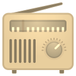

<!-- /frontend/components/menuSuperior.html -->

<!-- 🔊 Rádio acima do card -->
<div id="radio-widget" class="radio-widget">
  
  <div class="radio-label">Rádio Estrellar</div>
  <audio id="webRadioPlayer" preload="none"></audio>
</div>

<nav class="menu-superior">
  <ul>
    <li><a href="index.html"><span>🏠</span><br>Início</a></li>

    <li class="submenu">
      <a href="#"><span>✍️</span><br>Escrever ▾</a>
      <ul class="submenu-itens">
        <li>
          <a href="anotacoes.html#anotacoes" class="link-submenu" data-tab="anotacoes">
            <span>🗒️</span> Anotação
          </a>
        </li>
        <li>
          <a href="tema.html#tema" class="link-submenu" data-tab="tema">
            <span>🧠</span> Tema
          </a>
        </li>
      </ul>
    </li>

    <li class="submenu">
      <a href="#" id="relatorioBtn"><span>📊</span><br>Relatório ▾</a>
      <ul class="submenu-itens">
        <li>
          <a href="relatorio.html#anotacoes" class="link-submenu" data-tab="anotacoes">
            <span>📔</span> Anotações
          </a>
        </li>
        <li>
          <a href="relatorio.html#temas" class="link-submenu" data-tab="temas">
            <span>📚</span> Temas
          </a>
        </li>
      </ul>
    </li>

    <li><a href="config.html"><span>⚙️</span><br>Configurações</a></li>

  </ul>
</nav>

